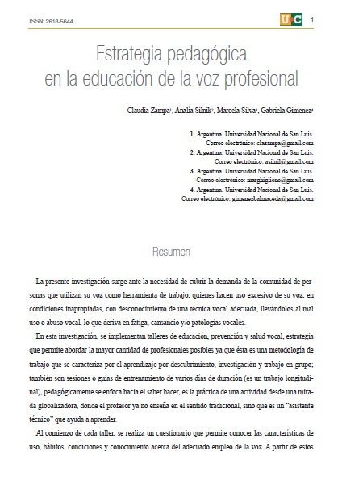
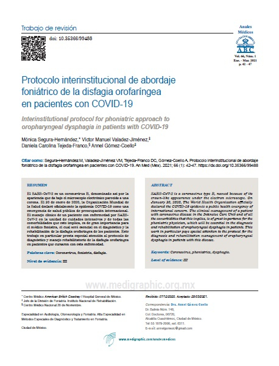
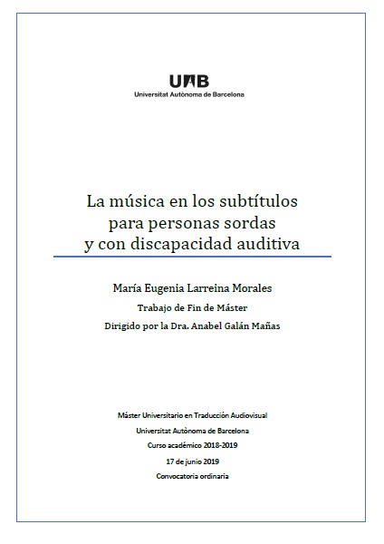
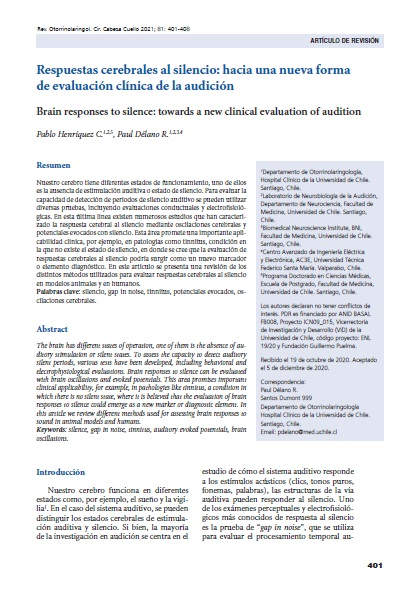
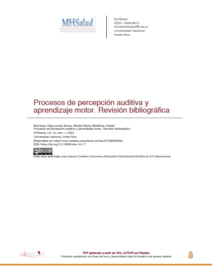
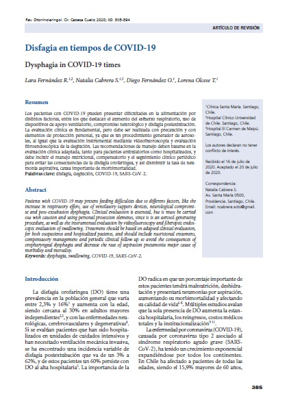
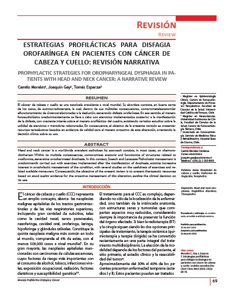

Lecturas
Estrategia pedagógica en la educación de la voz profesional.
Protocolo interinstitucional de abordaje foniatrico de la disfagia orofaringea en pacientes con Covid-19.
La música en los subtítulos para personas sordas y con discapacidad auditiva.
Respuestas cerebrales al silencio. Hacia una nueva forma de evaluación clínica de la audición.
Memorias II Jornada de actualización en Fonoaudiología. Abordaje clínico interdisciplinario de la deglución y la voz.
Procesos de percepción auditiva y aprendizaje motor. Revisión bibliográfica.
Disfagia en tiempos de COVID-19.
Estrategias profilacticas para disfagia orofaringea en pacientes con cancer de cabeza y cuello. Revision narrativa.
